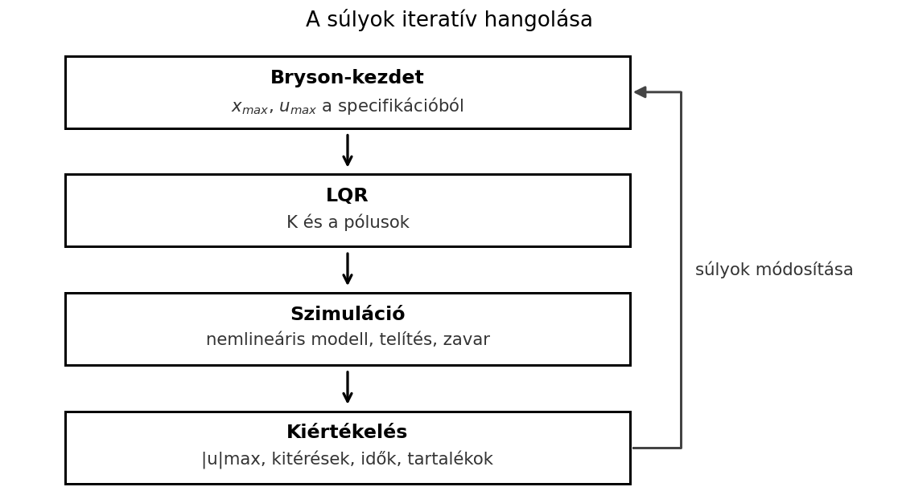
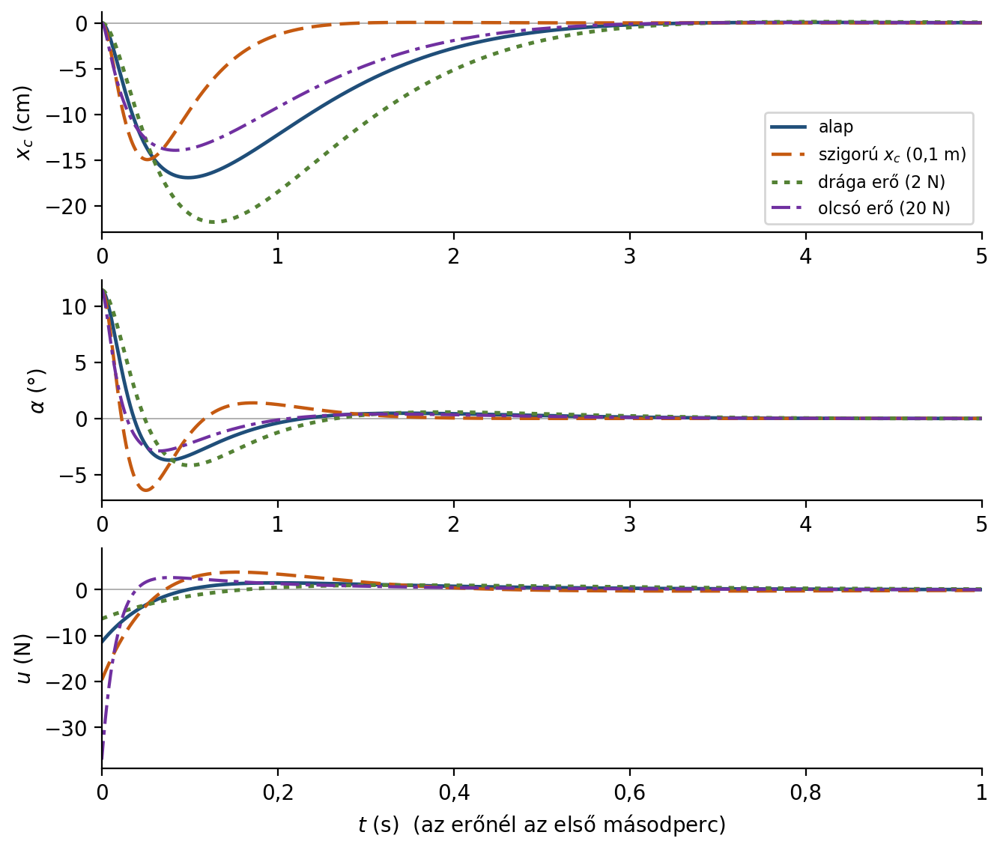

19.2 A Riccati-egyenlet megoldása
és a súlyok választása
19.2.1 Motiváció
Az optimális szabályozási feladat és az LQR
alfejezet képletet adott:
,
ahol
a Riccati-egyenlet stabilizáló megoldása. A kettős integrátornál ezt
kézzel megoldottuk. A kocsis ingánál viszont
egy
-es
szimmetrikus mátrix, tíz ismeretlennel és tíz csatolt másodfokú
egyenlettel – ezt kézzel nem érdemes próbálni. Két kérdés vár
válaszra:
Hogyan számoljuk ki
-et
megbízhatóan, és honnan tudjuk, hogy a kapott mátrix a jó megoldás?
Honnan vegyük a
és
súlyokat? Az inga referenciatervében
és
szerepelt – ezek nem fizikai állandók, valakinek ki kellett választania
őket.
Az első kérdésre a Hamilton-mátrix, a másodikra a Bryson-szabály, a
szimmetrikus gyökhely és egy fegyelmezett iteráció a válasz.
19.2.2 Szemlélet
Mielőtt a képletek jönnének, nézd meg, hová vándorolnak az
LQR-pólusok, ha a beavatkozás árát változtatjuk. Legyen a költség
egyetlen kimenetet büntető
integrálja:
,
.
Kicsi
olcsó, nagy
drága beavatkozást jelent.
Tippeld meg: ha a beavatkozás szinte ingyen van
(),
minden zárt köri pólus a végtelenbe tart-e, vagyis
lehet-e a kocsi visszaállása tetszőlegesen gyors?
Statikus változat (mint a PDF-ben)
Az LQR-pólusok gyökhelye a kettős integrátornál és a kocsis
inga x_c kimeneténél, valamint az inga válasza három súlyra
A kettős integrátor pólusai valóban korlátlanul gyorsulnak. Az
ingánál viszont a négy pólusból kettő
esetén a
pontnál megáll. Ez a pont az
átviteli függvény
-ös
jobb oldali zérusának tükörképe. A kocsihelyzet válasza is árulkodó: a
kocsi először elfelé indul (0,2 m-ről 0,27 m-re),
mielőtt visszajönne – a rudat előbb meg kell dönteni a haladás irányába.
Ezt a viselkedést a nem minimumfázisú rendszer jelének neveztük, és
semmilyen súlyozás nem szünteti meg.
19.2.3 A Hamilton-mátrix
Az optimális pályán vezessük be a
segédváltozót (costate). A beavatkozás
,
tehát
.
Mi
?
Mivel
,
a Riccati-egyenletet átrendezve
()
kapjuk, hogy
.
A két egyenlet együtt lineáris,
-dimenziós
rendszer:
Definíció. A
-es
az LQR-feladat Hamilton-mátrixa (Hamiltonian
matrix). Nem tartalmazza
-et
– csak a feladat adatait.
Szavakban: az optimális pályák a
-dimenziós
térnek azt az
-dimenziós
„lapját” járják be, amelyen
.
Írjuk fel ezt egyetlen mátrixegyenletben:
A felső blokk
,
ez azonosság. Az alsó blokk
,
ami pontosan a Riccati-egyenlet. Tehát
oszlopai a
invariáns alterét feszítik ki, és azon a
úgy hat, mint a zárt kör mátrixa. Következmény:
sajátértékei a
sajátértékei közül valók – és mert stabilizáló megoldást keresünk, a
bal félsíkbeliek.
Tétel (a sajátértékek szimmetriája). Ha
sajátértéke
-nak,
akkor
is.
Bizonyítás: legyen
.
Közvetlen kiszorzással
.
Hasonló mátrixok sajátértékei egyeznek,
sajátértékei pedig
-éi,
tehát
spektruma megegyezik
spektrumával.
Stabilizálhatóság és detektálhatóság mellett
-nak
nincs sajátértéke a képzetes tengelyen, így pontosan
darab stabil sajátértéke van. A hozzájuk tartozó sajátvektorokat
oszloponként egymás mellé téve kapjuk a
-es
mátrixot. Ugyanazt az alteret feszíti ki, mint
,
tehát
,
vagyis
Ez a teljes algoritmus: sajátérték-felbontás, a stabil
vektorok kiválogatása, egy lineáris egyenletrendszer. Komplex
sajátpároknál
és
komplex, de
valós (a kerekítési hiba képzetes részét eldobjuk, és
-et
szimmetrizáljuk).
Numerikus csapda: ha
-nak
(közel) többszörös sajátértéke van, a sajátvektorok majdnem
párhuzamosak, és
invertálása pontatlan lesz. A megbízható megoldók ezért rendezett
Schur-felbontással a stabil alteret ortonormált
bázissal adják meg; a controlkit.lqr.care automatikusan
erre vált, ha a sajátvektorok rosszul kondicionáltak. A SciPy
solve_continuous_are hasonló alapelvű, de egy
általánosított (nyalábos) feladatot old meg (a belső algoritmus a SciPy
dokumentációja szerint – ellenőrizendő a használt verzióban). Nagyon
nagy
(
több ezres) feladatokra iteratív eljárások valók, például a
Newton–Kleinman-iteráció; ezt a könyv nem tárgyalja.
19.2.4 A megoldás ellenőrzése
Egy Riccati-megoldót sosem fogadunk el vakon. Négy olcsó
ellenőrzés:
ellenőrzés
mit mutat, ha hibás
maradék:
elszámolt vagy pontatlan megoldás
szimmetria:
numerikus hiba, rossz sajátvektorok
sajátértékei nemnegatívak
nem a stabilizáló gyök
minden sajátértéke a bal félsíkon
nem stabilizáló megoldás, sértett feltétel
A maradékot mindig relatívan nézd, például
és
nagyságához viszonyítva.
19.2.5 A Bryson-szabály és a súlyok
hangolása
A súlyok megválasztásához kell egy értelmes kiindulópont. A
Bryson-szabály (Bryson’s rule) minden jelhez
egy „még elfogadható legnagyobb értéket” kér:
Így a költség minden tagja
alakú, dimenzió nélküli szám: egy tag pontosan akkor
,
ha az adott jel a határán jár. A különböző mértékegységek (méter,
radián, newton) ezzel összemérhetővé válnak. Az ingánál
és
N adja a fenti
,
súlyokat.
Figyelem: a
értékek nem korlátok. A
rad-os kezdeti dőlésnél az erő csúcsa
N, a „megengedett”
N több mint kétszerese. A szabály a skálákat rendezi, a viselkedést a
szimuláció alapján hangoljuk. Az alábbi ciklus ajánlott:

A súlyok iteratív hangolása - Egy körben
csak egy súlyt változtass, nagyságrendi lépésekben
(2–10-szeres).
Négy változat eredménye a
rad-os dőlésre (nemlineáris modell; a
az az időpont, amely után a kocsi végig
cm-en belül marad):
változat
(N)
(cm)
(s)
alap
(
m,
N)
szigorú
(
m)
drága erő
(
N)
olcsó erő
(
N)

A kocsis inga válasza négy Bryson-súlyozással: kocsihelyzet,
dőlés és erő
Két tanulság. Először: az olcsó erő háromszoros
csúcserőt eredményez, a kocsi visszatérése mégis alig gyorsul. A lassú
póluspárt ugyanis a
elemeinek aránya szabja meg, az
csökkentése főleg a gyors pólusokat tolja ki. Ha a kocsit akarod
siettetni, a kocsira vonatkozó súlyt növeld. Másodszor: a kocsi kitérése
alig csökken
cm alá, bármit teszünk – a rudat a kocsi elmozdításával lehet csak
visszaállítani, ez a nem minimumfázisú viselkedés ára.
19.2.6 A szimmetrikus gyökhely
Egy bemenet, egy büntetett kimenet
(,
,
)
esetén a pólusok helye
kiszámítása nélkül is megadható. Legyen
.
A Schur-komplemens szabályával, a
azonosságot használva:
A zárójelben
,
és
.
Ebből
Tétel (szimmetrikus gyökhely, symmetric root
locus). Az LQR zárt köri pólusai a
egyenlet bal félsíkbeli gyökei.
A
szerinti viselkedés közvetlenül leolvasható:
(drága beavatkozás): a gyökök a
gyökeihez tartanak: a stabil nyílt köri pólusok maradnak, az instabilak
a tükörképükbe kerülnek.
(olcsó beavatkozás): ha
fokszáma
,
akkor
pólus
zérusaihoz (a jobb oldaliak tükörképéhez) tart, a többi
a végtelenbe, egyenletesen elosztott irányokban
(Butterworth-mintázat).
A kettős integrátorra
(,
)
az egyenlet
:
a stabil gyökök sugara
,
irányuk
és
– ugyanaz, mint Az optimális szabályozási feladat
és az LQR alfejezet feladatában kapott
,
.
A kocsis ingánál
,
a zérusok
:
ezért „ragad” két pólus a
-nél.
19.2.7 Kimeneti súlyozás és
kereszttag
Gyakran nem az állapotokat, hanem valamely
mennyiséget (pl. gyorsulást, teljesítményt) akarjuk kicsinek tartani. A
büntetés kifejtése
vagyis
,
,
és megjelenik egy
kereszttag. A
költség megoldása ugyanazzal a gondolattal adódik:
,
és a Riccati-egyenletben
helyére
kerül. A controlkit.lqr.lqr az S argumentummal
kezeli. Ha
,
akkor
az egyszerű kimeneti súlyozás – ilyenkor
-et
külön kell megadni.
,
karakterisztikus polinom
,
gyökök
(szimmetrikusak, ahogy kell).
A stabil
sajátvektora:
,
azaz
,
.
,
és a zárt köri pólus éppen
.
✓
Kettős integrátor,
,
:
soronként,
:
;
;
;
.
választással
,
és a negyedik sor
-et
ad. A stabil gyökök:
.
-re
,
tehát
;
ennek konjugáltja.
első oszlopa:
.
A képzetes részből
,
azaz
;
a valós részből
.
A második sor
,
ebből
.
Ugyanazt a mátrixot kaptuk, mint a Riccati-egyenlet elemenkénti
megoldásából – mátrixinverz nélkül, mert a komplex konjugált oszlop
ugyanezt az információt hordozza.
19.2.9 Kód
Saját megoldó húsz sorban, az ellenőrzésekkel:
import numpy as npfrom scipy import linalgfrom controlkit import lqr as lqdef riccati_hamilton(A, B, Q, R):"""X = U2 U1^-1 a Hamilton-mátrix stabil sajátvektoraiból.""" n = A.shape[0] G = B @ np.linalg.solve(R, B.T) H = np.block([[A, -G], [-Q, -A.T]]) lam, V = np.linalg.eig(H) U = V[:, lam.real <0]assert U.shape[1] == n, "nincs n darab stabil sajátérték" X = np.real(U[n:] @ np.linalg.inv(U[:n]))return (X + X.T) /2, lamref = lq.reference_pendulum_lqr()A, B, Q, R = ref["A"], ref["B"], ref["Q"], ref["R"]X, lam = riccati_hamilton(A, B, Q, R)K = np.linalg.solve(R, B.T @ X)print("H sajátértékei:", np.sort_complex(lam).round(2))print("K =", K.round(4))X_sp = linalg.solve_continuous_are(A, B, Q, R)res = A.T @ X + X @ A - X @ B @ np.linalg.solve(R, B.T @ X) + Qprint("eltérés a SciPy-tól < 1e-9:", np.abs(X - X_sp).max() <1e-9)print("relatív maradék < 1e-9:", np.abs(res).max() / np.abs(A.T @ X).max() <1e-9)print("X sajátértékei:", np.linalg.eigvalsh(X).round(3))print("max Re eig(A - BK) =", round(float(np.linalg.eigvals(A - B @ K).real.max()), 3))
H sajátértékei: [-12.94+0.j -10.16+0.j -1.61-0.89j -1.61+0.89j 1.61-0.89j
1.61+0.89j 10.16+0.j 12.94+0.j ]
K = [[-10. -11.3732 56.9351 10.3009]]
eltérés a SciPy-tól < 1e-9: True
relatív maradék < 1e-9: True
X sajátértékei: [ 0.023 0.531 2.793 15.748]
max Re eig(A - BK) = -1.614
A
nyolc sajátértéke valóban
párokban áll, és a négy stabil érték a zárt köri pólus. A Bryson-súlyok
a bryson függvénnyel:
from controlkit import place as plfor um in (2.0, 5.0, 20.0): Qv, Rv = lq.bryson([0.5, 1.0, 0.2, 2.0], um) r = lq.lqr(A, B, Qv, Rv) s = pl.simulate_pendulum(r.K, x0=(0, 0, 0.2, 0), t_end=8.0) late = s.t[np.abs(s.x[:, 0]) >0.01][-1]print(f"u_max = {um:4.1f}: R = {Rv[0, 0]:.4f}, |u|max = {np.abs(s.u).max():5.2f} N, "f"t_1cm = {late:.2f} s")print(" pólusok:", r.poles.round(2))
u_max = 2.0: R = 0.2500, |u|max = 6.32 N, t_1cm = 2.77 s
pólusok: [-7.27-2.47j -7.27+2.47j -1.49-0.9j -1.49+0.9j ]
u_max = 5.0: R = 0.0400, |u|max = 11.39 N, t_1cm = 2.47 s
pólusok: [-12.94+0.j -10.16+0.j -1.61-0.89j -1.61+0.89j]
u_max = 20.0: R = 0.0025, |u|max = 37.01 N, t_1cm = 2.31 s
pólusok: [-58.04+0.j -8.86+0.j -1.64-0.88j -1.64+0.88j]
A pólusok oszlopa mutatja az okot: a
pár szinte mozdulatlan, miközben a leggyorsabb pólus
-ről
-ra
ugrik.
19.2.10 Próbáld ki
A szimmetrikus gyökhely interaktív ábráján:
Butterworth-mintázat. Válaszd a kettős integrátort,
és húzd
-t
-ről
-ig.
A pólusok a
-os
egyeneseken futnak;
-nél
,
-nél
,
a csúcsbeavatkozás pedig
-ről
-re
nő.
Az inga korlátja. Az ingánál nézd a
állást: két pólus
körül ragad, a másik kettő
.
A kocsi először
m-ig a rossz irányba megy.
Drága vég. Az ingánál
:
két pólus
(a stabil nyílt köri pólus) és
(az instabil
tükörképe). Miért nem mehet az utóbbi a nulla közelébe?
DC-motor. A pozícióhurokban
-nél
az egyik pólus
:
a válasz nagyon lassú. Mekkora
kell, hogy a beállási idő
s alá menjen? (Segítség:
-nél
s.)
19.2.11 Tipikus hibák
Tünet: a saját megoldó komplex
-et
ad, vagy a maradék nagy. Ok: nem pontosan a stabil
sajátvektorokat választottad ki, vagy a sajátvektorok majdnem
párhuzamosak. Javítás: ellenőrizd, hogy
darab
érték van; rossz kondíciónál Schur-módszer.
Tünet: a Bryson-súlyok ellenére a jel messze
túllépi
-ot.
Ok: a szabály csak skálázás, nem korlát.
Javítás: növeld
-et,
vagy kezeld a telítést; kemény korláthoz MPC.
Tünet:
századrészére csökkentve alig gyorsul a lassú mozgás.
Ok: a lassú pólusokat
arányai vagy a folyamat zérusai kötik meg. Javítás: a
lassú állapot súlyát növeld, és nézd meg a szimmetrikus gyökhelyet.
Tünet: a hangolás során egyszerre mind az öt súly
változik, és nem tudni, mi okozta a hatást. Ok:
rendszertelen iteráció. Javítás: egy súly egy lépésben,
nagyságrendi változtatással, feljegyzett eredménnyel.
Tünet: a mértékegységváltás (rad → fok) után más a
szabályozó viselkedése. Ok: a súlyok nem váltódtak át.
Javítás: ha az állapotot átskálázod, a súlyt is:
a skálázás négyzetével osztandó.
19.2.12 Önellenőrzés
Miért pontosan
stabil sajátértéke van a Hamilton-mátrixnak a megfelelő feltételek
mellett?
Mi a kapcsolat
stabil sajátértékei és a zárt kör pólusai között?
Mit jelent a Bryson-szabályban
,
és mit nem jelent?
Hová tartanak az LQR-pólusok drága beavatkozásnál egy instabil
folyamatnál?
Miért nem lehet a kocsis inga kocsiválaszát tetszőlegesen gyorssá
tenni pusztán
csökkentésével?
19.2.13 Feladatok
(A) Egy drón magasságszabályozásánál a megengedett
magassághiba
m, a sebességhiba
m/s, a tolóerő eltérése
N. Írd fel a Bryson-súlyokat.
(A) Oldd meg a Hamilton-módszerrel:
,
,
,
.
(B) Legyen
(állapottérben
).
Írd fel a szimmetrikus gyökhely egyenletét, és add meg a pólusokat
-nél,
valamint a
határt.
(B) Skalár folyamat:
.
Büntesd az állapotot és a sebességét:
.
Határozd meg
,
,
értékét, a
erősítést és a pólust.
(C) Bizonyítsd be a
azonosságot.
(C, programozós) Keress Bryson-súlyokat az ingához,
amelyekkel
rad dőlésre
s és
N. Rácskeresés
és
felett; a megfelelők közül a legkisebb csúcserejűt add meg.
19.2.14 Rövid összefoglaló
Az LQR Riccati-egyenletét a
Hamilton-mátrix oldja meg: sajátértékei
párok, a stabil sajátvektorok
mátrixából
,
a stabil sajátértékek a zárt köri pólusok. Ellenőrizd a maradékot, a
szimmetriát, a pozitív (szemi)definitséget és a stabilitást. A
Bryson-szabály
(,
)
skálázott kiindulópont, utána szimulációval hangolunk. Egy bemenet–egy
kimenet esetén a pólusok a
bal félsíkbeli gyökei; a zérusok korlátozzák az elérhető
gyorsaságot.
A sajátértékek
párokban állnak, és stabilizálhatóság és detektálhatóság mellett egyik
sem esik a képzetes tengelyre; a
sajátérték fele tehát bal, fele jobb oldali.
Megegyeznek:
spektruma a
stabil spektruma.
A jel még elfogadható nagyságát, amelyből a súly skáláját képezzük;
nem kemény korlát, és az LQR nem garantálja, hogy a jel alatta
marad.
Az instabil pólusok bal félsíkbeli tükörképébe; a stabil pólusok
helyben maradnak.
csökkentése a pólusok egy részét a folyamat (tükrözött) zérusaihoz
viszi, más részét a végtelenbe; a lassú pár helyét a
elemeinek aránya szabja meg.
1.
,
.
2.
,
.
:
,
,
,
.
3.
,
.
Egyenlet:
.
:
,
ezek
szögű egységnyi számok, a négyzetgyökök bal félsíkbeli párja
.
A határ
:
,
tehát
(kétszeres a szimmetrikus egyenletben) és
:
a pólusok
és
.
r = lq.lqr([[0, 1], [0, -1]], [0, 1], np.diag([1.0, 0.0]), 1.0)print("pólusok:", r.poles.round(3), " K =", r.K.round(3))
pólusok: [-0.866-0.5j -0.866+0.5j] K = [[1. 0.732]]
4.
,
így
:
,
,
.
A Riccati-egyenlet
,
azaz
,
.
,
pólus
.
(Ellenőrzés:
változóval
optimuma
,
tehát
.)
5.
.
Az
jelöléssel
,
majd balról
-nel
(a blokksorok cseréje és az alsó negálása)
.
Ez éppen
,
mert
és
szimmetrikus.
6.
best =Nonefor xm in (0.05, 0.1, 0.2, 0.5):for um in (2.0, 5.0, 10.0): Qv, Rv = lq.bryson([xm, 1.0, 0.2, 2.0], um) s = pl.simulate_pendulum(lq.lqr(A, B, Qv, Rv).K, x0=(0, 0, 0.2, 0), t_end=8.0) late = s.t[np.abs(s.x[:, 0]) >0.01][-1] umax = np.abs(s.u).max()if late <1.5and umax <=25and (best isNoneor umax < best[0]): best = (umax, xm, um, late)print("x_c,max = {1}, u_max = {2}: |u|max = {0:.2f} N, t_1cm = {3:.2f} s".format(*best))
x_c,max = 0.1, u_max = 2.0: |u|max = 10.44 N, t_1cm = 1.19 s
A legjobb változat egyszerre szigorítja a kocsit
(
m) és drágítja az erőt
(
N). A csúcserő
N, kisebb, mint az alapterv
N-ja, a kocsi mégis kétszer gyorsabban ér vissza
(
s a
s helyett). A két súly aránya más jellegű választ ad:
nem mindig a nagyobb erő az ára a gyorsabb viselkedésnek – cserébe a
kocsi kitérése nő (kb.
cm).